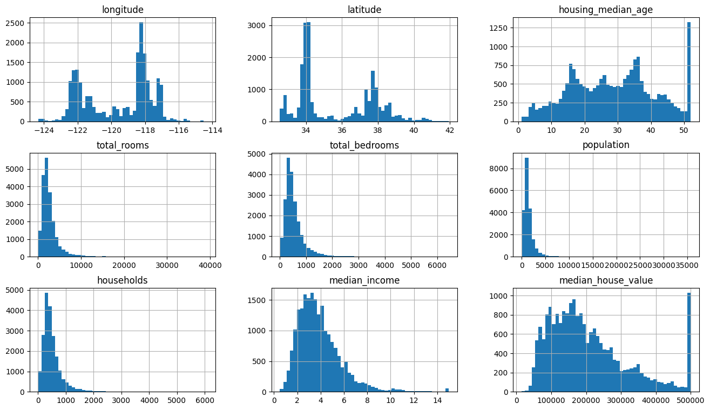
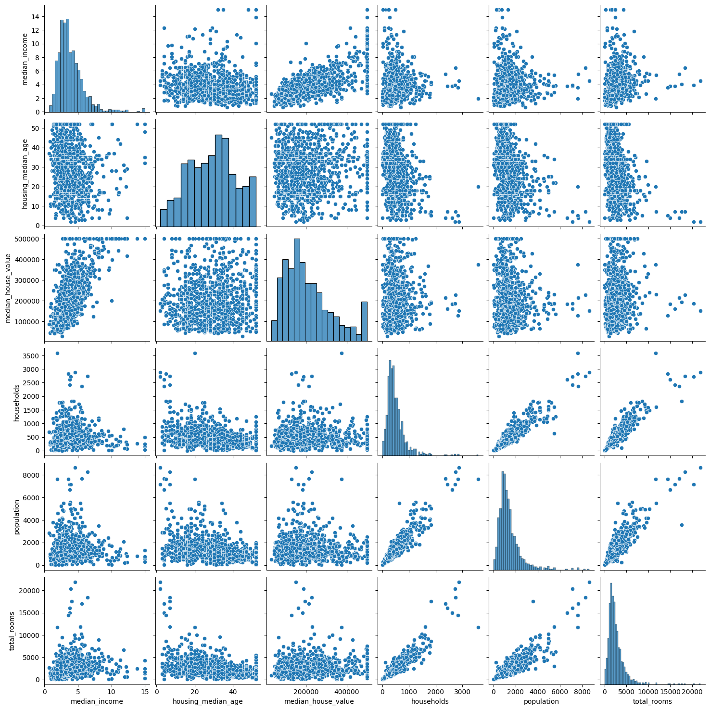
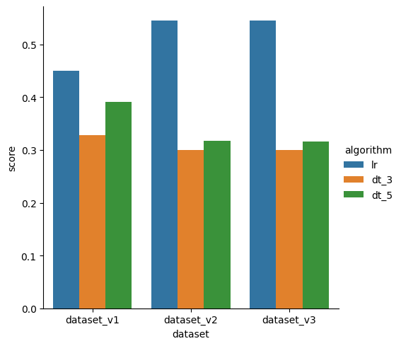
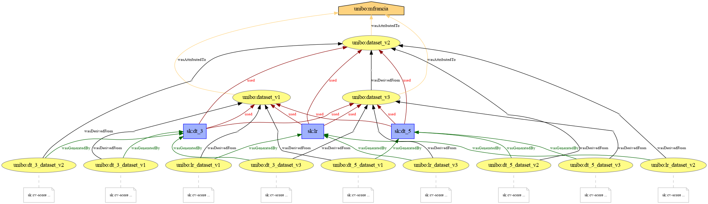

Big Data and Cloud Platforms (Module 2)
Matteo Francia
DISI — University of Bologna
m.francia@unibo.it

The California Housing Pricing case study
This notebook runs on Google Colab.
- Colab provides a serverless Jupyter notebook environment for interactive development.
- (At the moment, 2024) Google Colab is free to use like other G Suite products.
In this laboratory we will build a simple data pipeline to get acquainted with the “main” steps necessary to transform your data.
- The data contains information from the 1990 California census. It does provide an accessible introductory dataset for teaching people about the basics of machine learning.
From the book Hands on machine learning
This data has metrics such as the population, median income, median housing price, and so on for each block group in California. Block groups are the smallest geographical unit for which the US Census Bureau publishes sample data (a block group typically has a population of 600 to 3,000 people). We will just call them “districts” for short. The goal is to build a model to predict the median housing price in any district, given all the other metrics.
Setup (& library versioning)
First of all, we need to setup the Python environment by installing and importing the necessary Python dependencies.
Code
!pip install prov pydot
import pandas as pd
import sklearn as sk
import numpy as np
import seaborn as sns
import prov
print(pd.__version__)
print(sk.__version__)
print(np.__version__)
print(sns.__version__)
print(prov.__version__)
Collecting prov
Downloading prov-3.2.2-py3-none-any.whl.metadata (5.1 kB)
Collecting pydot
Downloading pydot-4.0.1-py3-none-any.whl.metadata (11 kB)
Requirement already satisfied: pyparsing>=3.1.0 in /usr/local/lib/python3.14/site-packages (from pydot) (3.3.2)
Downloading prov-3.2.2-py3-none-any.whl (967 kB)
━━━━━━━━━━━━━━━━━━━━━━━━━━━━━━━━━━━━━━━━ 0.0/967.2 kB ? eta -:--:--
━━━━━━━━━━━━━━━━━━━━━━━━━━━━━━━━━━━━━━━━ 967.2/967.2 kB 39.5 MB/s 0:00:00
Downloading pydot-4.0.1-py3-none-any.whl (37 kB)
Installing collected packages: pydot, prov
━━━━━━━━━━━━━━━━━━━━╺━━━━━━━━━━━━━━━━━━━ 1/2 [prov]
━━━━━━━━━━━━━━━━━━━━╺━━━━━━━━━━━━━━━━━━━ 1/2 [prov]
━━━━━━━━━━━━━━━━━━━━━━━━━━━━━━━━━━━━━━━━ 2/2 [prov]
Successfully installed prov-3.2.2 pydot-4.0.1
WARNING: Running pip as the 'root' user can result in broken permissions and conflicting behaviour with the system package manager, possibly rendering your system unusable. It is recommended to use a virtual environment instead: https://pip.pypa.io/warnings/venv. Use the --root-user-action option if you know what you are doing and want to suppress this warning.
[notice] A new release of pip is available: 26.0.1 -> 26.2.1
[notice] To update, run: pip install --upgrade pip
3.0.1
1.8.0
2.4.2
0.13.2
3.2.2
Why should we track the libraries imported in the coding environment?
Data collection
Import the dataset. In this case, there is no need for ETL/integration since the dataset is ready for elaboration.
Code
df = pd.read_csv("https://w4bo.github.io/AA2324-unibo-bigdataandcloudplatforms/housing.csv")
df
| 0 |
-122.23 |
37.88 |
41.0 |
880.0 |
129.0 |
322.0 |
126.0 |
8.3252 |
452600.0 |
NEAR BAY |
| 1 |
-122.22 |
37.86 |
21.0 |
7099.0 |
1106.0 |
2401.0 |
1138.0 |
8.3014 |
358500.0 |
NEAR BAY |
| 2 |
-122.24 |
37.85 |
52.0 |
1467.0 |
190.0 |
496.0 |
177.0 |
7.2574 |
352100.0 |
NEAR BAY |
| 3 |
-122.25 |
37.85 |
52.0 |
1274.0 |
235.0 |
558.0 |
219.0 |
5.6431 |
341300.0 |
NEAR BAY |
| 4 |
-122.25 |
37.85 |
52.0 |
1627.0 |
280.0 |
565.0 |
259.0 |
3.8462 |
342200.0 |
NEAR BAY |
| ... |
... |
... |
... |
... |
... |
... |
... |
... |
... |
... |
| 20635 |
-121.09 |
39.48 |
25.0 |
1665.0 |
374.0 |
845.0 |
330.0 |
1.5603 |
78100.0 |
INLAND |
| 20636 |
-121.21 |
39.49 |
18.0 |
697.0 |
150.0 |
356.0 |
114.0 |
2.5568 |
77100.0 |
INLAND |
| 20637 |
-121.22 |
39.43 |
17.0 |
2254.0 |
485.0 |
1007.0 |
433.0 |
1.7000 |
92300.0 |
INLAND |
| 20638 |
-121.32 |
39.43 |
18.0 |
1860.0 |
409.0 |
741.0 |
349.0 |
1.8672 |
84700.0 |
INLAND |
| 20639 |
-121.24 |
39.37 |
16.0 |
2785.0 |
616.0 |
1387.0 |
530.0 |
2.3886 |
89400.0 |
INLAND |
20640 rows × 10 columns
Profiling: Schema
Code
Index(['longitude', 'latitude', 'housing_median_age', 'total_rooms',
'total_bedrooms', 'population', 'households', 'median_income',
'median_house_value', 'ocean_proximity'],
dtype='str')
Schema description
longitude: A measure of how far west a house is; a higher value is farther westlatitude: A measure of how far north a house is; a higher value is farther northhousingMedianAge: Median age of a house within a block; a lower number is a newer buildingtotalRooms: Total number of rooms within a blocktotalBedrooms: Total number of bedrooms within a blockpopulation: Total number of people residing within a blockhouseholds: Total number of households, a group of people residing within a home unit, for a blockmedianIncome: Median income for households within a block of houses (measured in tens of thousands of US Dollars)medianHouseValue: Median house value for households within a block (measured in US Dollars)oceanProximity: Location of the house w.r.t ocean/sea
Profiling: Schema
Code
<class 'pandas.DataFrame'>
RangeIndex: 20640 entries, 0 to 20639
Data columns (total 10 columns):
# Column Non-Null Count Dtype
--- ------ -------------- -----
0 longitude 20640 non-null float64
1 latitude 20640 non-null float64
2 housing_median_age 20640 non-null float64
3 total_rooms 20640 non-null float64
4 total_bedrooms 20433 non-null float64
5 population 20640 non-null float64
6 households 20640 non-null float64
7 median_income 20640 non-null float64
8 median_house_value 20640 non-null float64
9 ocean_proximity 20640 non-null str
dtypes: float64(9), str(1)
memory usage: 1.6 MB
Profiling: Distribution and statistics
Code
df.describe(include='all')
| count |
20640.000000 |
20640.000000 |
20640.000000 |
20640.000000 |
20433.000000 |
20640.000000 |
20640.000000 |
20640.000000 |
20640.000000 |
20640 |
| unique |
NaN |
NaN |
NaN |
NaN |
NaN |
NaN |
NaN |
NaN |
NaN |
5 |
| top |
NaN |
NaN |
NaN |
NaN |
NaN |
NaN |
NaN |
NaN |
NaN |
<1H OCEAN |
| freq |
NaN |
NaN |
NaN |
NaN |
NaN |
NaN |
NaN |
NaN |
NaN |
9136 |
| mean |
-119.569704 |
35.631861 |
28.639486 |
2635.763081 |
537.870553 |
1425.476744 |
499.539680 |
3.870671 |
206855.816909 |
NaN |
| std |
2.003532 |
2.135952 |
12.585558 |
2181.615252 |
421.385070 |
1132.462122 |
382.329753 |
1.899822 |
115395.615874 |
NaN |
| min |
-124.350000 |
32.540000 |
1.000000 |
2.000000 |
1.000000 |
3.000000 |
1.000000 |
0.499900 |
14999.000000 |
NaN |
| 25% |
-121.800000 |
33.930000 |
18.000000 |
1447.750000 |
296.000000 |
787.000000 |
280.000000 |
2.563400 |
119600.000000 |
NaN |
| 50% |
-118.490000 |
34.260000 |
29.000000 |
2127.000000 |
435.000000 |
1166.000000 |
409.000000 |
3.534800 |
179700.000000 |
NaN |
| 75% |
-118.010000 |
37.710000 |
37.000000 |
3148.000000 |
647.000000 |
1725.000000 |
605.000000 |
4.743250 |
264725.000000 |
NaN |
| max |
-114.310000 |
41.950000 |
52.000000 |
39320.000000 |
6445.000000 |
35682.000000 |
6082.000000 |
15.000100 |
500001.000000 |
NaN |
Profiling: Distribution
Code
import matplotlib.pyplot as plt
df.hist(bins=50, figsize=(16, 9))
plt.show()

Profiling: are there relationships between variables?
Code
tmp = df[["median_income", "housing_median_age", "median_house_value", "households", "population", "total_rooms"]]
sns.pairplot(tmp.sample(n=1000, random_state=42), markers='o') # hue="median_house_value",
plt.show()

Compression: Memory usage
What if I change float64 to float32?
Code
dff = df.copy(deep=True) # copy the dataframe
for x in df.columns: # iterate over the columns
if dff[x].dtype == 'float64': dff[x] = dff[x].astype('float32') # ... change it to `float32`
dff.info() # show some statistics on the dataframe
<class 'pandas.DataFrame'>
RangeIndex: 20640 entries, 0 to 20639
Data columns (total 10 columns):
# Column Non-Null Count Dtype
--- ------ -------------- -----
0 longitude 20640 non-null float32
1 latitude 20640 non-null float32
2 housing_median_age 20640 non-null float32
3 total_rooms 20640 non-null float32
4 total_bedrooms 20433 non-null float32
5 population 20640 non-null float32
6 households 20640 non-null float32
7 median_income 20640 non-null float32
8 median_house_value 20640 non-null float32
9 ocean_proximity 20640 non-null str
dtypes: float32(9), str(1)
memory usage: 887.0 KB
Compression: Memory usage
What if I change float64 to float16?
Code
dff = df.copy(deep=True) # copy the dataframe
for x in df.columns: # iterate over the columns
if dff[x].dtype == 'float64': dff[x] = dff[x].astype('float16') # ... change it to `float16`
dff.info() # show some statistics on the dataframe
<class 'pandas.DataFrame'>
RangeIndex: 20640 entries, 0 to 20639
Data columns (total 10 columns):
# Column Non-Null Count Dtype
--- ------ -------------- -----
0 longitude 20640 non-null float16
1 latitude 20640 non-null float16
2 housing_median_age 20640 non-null float16
3 total_rooms 20640 non-null float16
4 total_bedrooms 20433 non-null float16
5 population 20640 non-null float16
6 households 20640 non-null float16
7 median_income 20640 non-null float16
8 median_house_value 20640 non-null float16
9 ocean_proximity 20640 non-null str
dtypes: float16(9), str(1)
memory usage: 524.2 KB
Code
| count |
2.064000e+04 |
2.064000e+04 |
2.064000e+04 |
20640.00 |
20433.0 |
20640.0 |
20640.0 |
2.064000e+04 |
20640.0 |
| mean |
-inf |
inf |
inf |
inf |
inf |
inf |
inf |
inf |
inf |
| std |
2.003906e+00 |
2.136719e+00 |
1.258594e+01 |
inf |
inf |
inf |
inf |
1.899414e+00 |
NaN |
| min |
-1.243750e+02 |
3.253125e+01 |
1.000000e+00 |
2.00 |
1.0 |
3.0 |
1.0 |
5.000000e-01 |
15000.0 |
| 25% |
-1.218125e+02 |
3.393750e+01 |
1.800000e+01 |
1447.75 |
296.0 |
787.0 |
280.0 |
2.563965e+00 |
NaN |
| 50% |
-1.185000e+02 |
3.425000e+01 |
2.900000e+01 |
2128.00 |
435.0 |
1166.0 |
409.0 |
3.535156e+00 |
NaN |
| 75% |
-1.180000e+02 |
3.771875e+01 |
3.700000e+01 |
3148.00 |
647.0 |
1725.0 |
605.0 |
4.742188e+00 |
NaN |
| max |
-1.143125e+02 |
4.193750e+01 |
5.200000e+01 |
39328.00 |
6444.0 |
35680.0 |
6080.0 |
1.500000e+01 |
inf |
Missing values
There are some missing values in the column total_bedorooms what can we do?
Most Machine Learning algorithms cannot work with missing features. We have three options:
- Get rid of the corresponding districts (i.e., drop the rows)
- Get rid of the whole attribute (i.e., drop the columns)
- Set the values to some value (zero, the mean, the median, etc.)
Non-numeric attributes
ocean_proximity is a text attribute so we cannot compute its median. Some options:
- Get rid of the whole attribute. (
df.drop("ocean_proximity", axis=1))
- Change from categorical to ordinal (e.g.,
NEAR BAY = 0, INLAND = 1)
- Change from categorical to one hot encoding
Scaling attributes
Attributes have very different scales.
Should we scale them?
- Min-max normalization
- Standardization
- Robust scaling
Machine learning
Our machine learning pipeline can be composed by alternative solutions
If we consider the default parameters for each algorithm, we have
- 3 options for imputation
- … x 2 options for encoding
- … x 3 options for normalization
- … x 3 algorithms
- = 54 alternatives!
Alternative pre-processing pipelines
Code
from sklearn.preprocessing import StandardScaler
if "ocean_proximity" in df.columns: # For now we simply drop "ocean_proximity"
df = df.drop("ocean_proximity", axis=1)
# Let's create some dataset variations
# dataset1: drop the rows containing the null values and the columns `latitude` and `longitude`
dataset_v1 = df.copy(deep=True).dropna().drop(["longitude", "latitude"], axis=1)
# dataset2: impute missing values with the average number of bedrooms
dataset_v2 = df.copy(deep=True)
dataset_v2["total_bedrooms"] = dataset_v2["total_bedrooms"].fillna(dataset_v2["total_bedrooms"].mean())
# dataset3: also standardize dataset_v2
numerical_features = dataset_v2.select_dtypes(include=np.number) # select numerical features
scaler = StandardScaler() # Create a StandardScaler object
scaled_features = scaler.fit_transform(numerical_features) # Fit and transform the numerical features
dataset_v3 = pd.DataFrame(scaled_features, columns=numerical_features.columns) # Convert the scaled features back to a DataFrame
# Create the list of datasets
datasets = [(dataset_v1, "dataset_v1"), (dataset_v2, "dataset_v2"), (dataset_v3, "dataset_v3")]
Alternative machine learning algorithms
Code
# Let's import some machine learning models (here we are not addressing hyper-parameter tuning)
from sklearn.tree import DecisionTreeRegressor
from sklearn.linear_model import LinearRegression, Lasso
dt_3 = DecisionTreeRegressor(random_state=0, max_depth=3) # initialize decision tree regressor model
dt_5 = DecisionTreeRegressor(random_state=0, max_depth=5) # initialize decision tree regressor model
lr = LinearRegression() # initialize a linear regressor model
# Create the list of algorithms
ml_algorithms = [(lr, "lr"), (dt_3, "dt_3"), (dt_5, "dt_5")]
Train the models
What are the insights?
Code
from sklearn.model_selection import cross_val_score
instances, i = [], 0
for dataset, dataset_version in datasets: # For each dataset version...
X = dataset.drop(columns=["median_house_value"]).to_numpy() # Get the training set
y = dataset["median_house_value"].to_numpy() # Get the label array
for ml_algorithm, ml_algorithm_version in ml_algorithms: # For each machine learning algorithm...
instance = {} # Run the machine learning algorithm on the given dataset
instance["id"] = i # store the id of the instance
instance["dataset"] = dataset_version # store the version of the dataset
instance["algorithm"] = ml_algorithm_version # store the version of the ml algorithm
instance["score"] = cross_val_score(ml_algorithm, X, y, cv=10).mean() # store the performance of the pipeline instance
instances = instances + [instance]
i += 1
result = pd.DataFrame.from_dict(instances, orient='columns') # Collect the results
sns.catplot(x = "dataset", y = "score", hue = "algorithm", data = result, kind = "bar")

How do we track all these changes?
Creating and plotting the provenance graph
Code
from prov.model import ProvDocument
from prov.dot import prov_to_dot
from IPython.display import Image
d1 = ProvDocument() # Create an empty provenance document
d1.add_namespace('unibo', 'https://www.unibo.it') # add the namespace
d1.add_namespace('sk', 'https://scikit-learn.org/stable/') # add the namespace
agent = d1.agent('unibo:mfrancia') # add an agent
d1.wasDerivedFrom("unibo:dataset_v3", "unibo:dataset_v2")
for dataset, dataset_version in datasets: # For each dataset version...
original_dataset = d1.entity('unibo:' + dataset_version) # register the dataset
d1.wasAttributedTo(original_dataset, agent) # attribute the dataset to the agent who created it
for ml_algorithm, ml_algorithm_version in ml_algorithms: # For each machine learning algorithm...
algo = d1.activity('sk:' + ml_algorithm_version) # register the algorithm as a (processing) activity
processed_dataset = d1.entity('unibo:' + ml_algorithm_version + "_" + dataset_version, {'sk:cv-score': '...'}) # create an activity represented the processed dataset
d1.used(algo, original_dataset) # the activity used the dataset as input
d1.wasGeneratedBy(processed_dataset, algo) # the processed dataset has been created by the algorithm
d1.wasDerivedFrom(processed_dataset, original_dataset) # the processed dataset has been derived from the original one
dot = prov_to_dot(d1) # visualize the graph
dot.write_png('prov.png')
Image('prov.png')

Can you build and track a better model?
Code
# Try your sk-learn model here